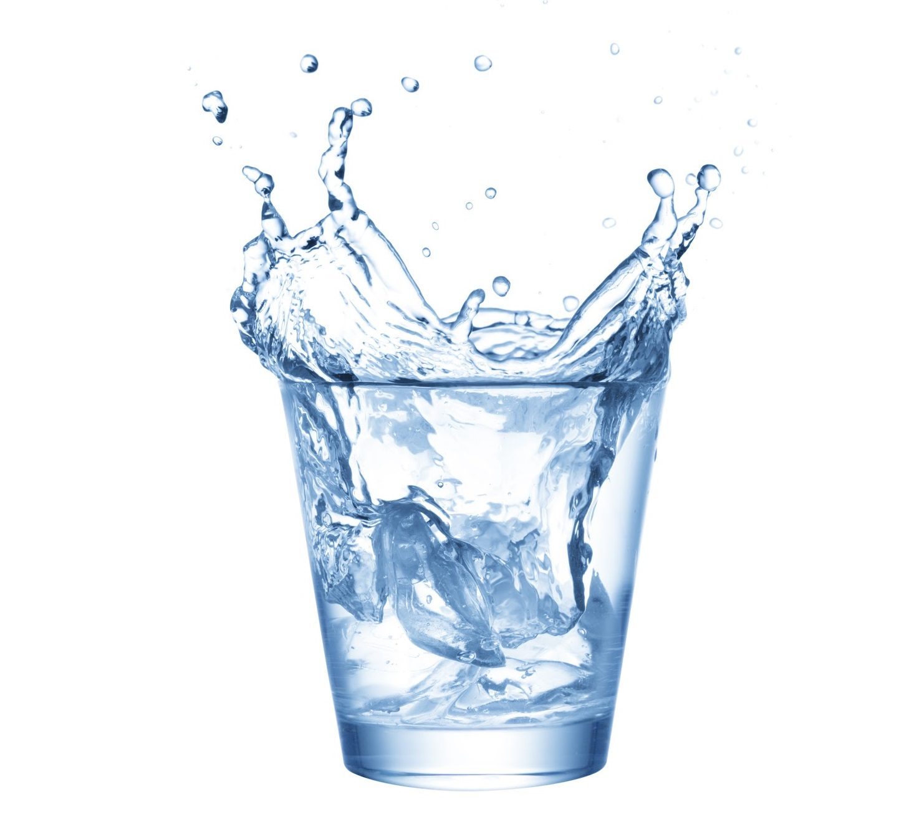
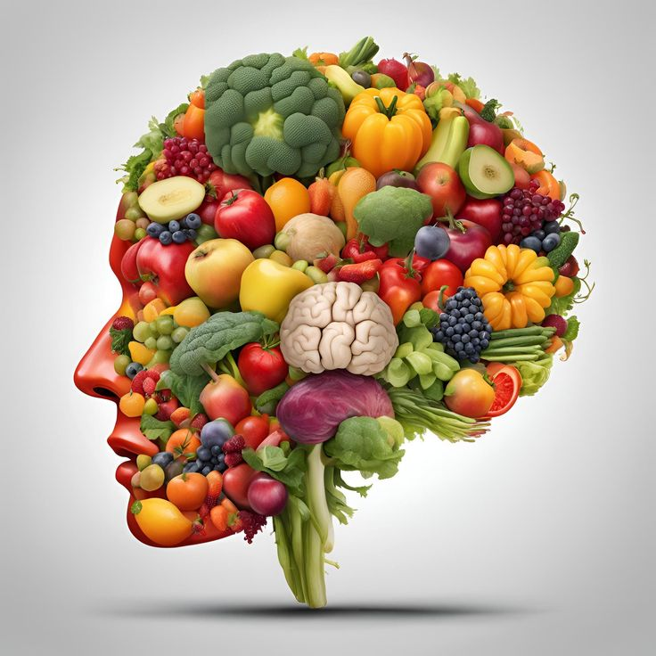

1. Les bases d'une alimentation équilibrée
Une alimentation équilibrée repose sur la consommation variée et proportionnée des trois macronutriments essentiels : les protéines, les glucides et les lipides. Les protéines favorisent la construction et la réparation des muscles, tandis que les glucides fournissent l’énergie nécessaire au bon fonctionnement du corps. Les lipides, souvent mal compris, sont cruciaux pour le cerveau et le système hormonal, à condition de privilégier les sources saines comme les avocats, les noix et l’huile d’olive. En complément, il est essentiel d’inclure des vitamines et minéraux issus des fruits, légumes, et céréales complètes pour garantir un bon équilibre nutritionnel.

2. Les meilleurs snacks avant et après l'entraînement
Pour un entraînement efficace, le choix des snacks est crucial. Avant de faire du sport, privilégiez un en-cas riche en glucides et pauvre en graisses pour fournir une énergie rapide, comme une banane avec une poignée d’amandes. Après l’entraînement, l’objectif est de reconstituer les réserves énergétiques et d’aider les muscles à récupérer. Un smoothie à base de protéines (comme le yaourt grec), de fruits et de graines est idéal. Les œufs durs avec une tranche de pain complet ou un shake protéiné sont également d’excellentes options.

3. L’hydratation : Pourquoi boire de l’eau est essentiel ?
L’eau est le pilier de la santé humaine. Elle participe à presque toutes les fonctions corporelles, notamment la régulation de la température, le transport des nutriments et l’élimination des toxines. Une déshydratation même légère peut entraîner de la fatigue, des maux de tête et une baisse de concentration. Les experts recommandent de boire entre 1,5 et 2 litres d’eau par jour, en ajustant selon l’activité physique et la température. Si l’eau pure vous ennuie, des alternatives comme les infusions ou les fruits riches en eau, comme les pastèques, peuvent maintenir une bonne hydratation.
4. L’impact de la nutrition sur la santé mentale
Ce que nous mangeons influence directement notre humeur et nos fonctions cognitives. Les aliments riches en oméga-3, comme le saumon et les noix, soutiennent la santé cérébrale en réduisant l’inflammation. Les vitamines du groupe B, présentes dans les légumes verts et les céréales complètes, aident à produire des neurotransmetteurs essentiels tels que la sérotonine. Éviter les aliments transformés et les sucres rapides permet également de stabiliser les niveaux d’énergie et d’humeur. Une bonne nutrition est donc un allié précieux pour maintenir un esprit sain dans un corps sain.
